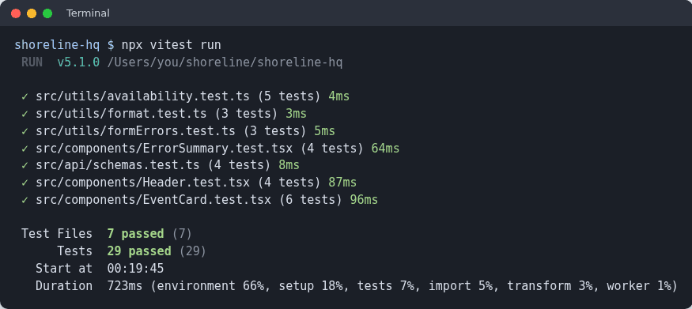

Checkpoint 3, then a test suite that checks the HQ in a second.
| 0:00 | Warm-up: Modules 7 and 8 |
| 0:10 | Checkpoint 3 (30 min) |
| 0:40 | 9.1 Testing Components: model, demo |
| 1:15 | Break (10 min) |
| 1:25 | 9.1 Queries, helper, lab, project |
| 2:35 | Checkpoint 3 debrief |
| 2:50 | Exit ticket, homework, what to bring |
labs/module-21. Work in starter/, never the solution.z.input versus z.output with z.coerce.number?Server state and forms: Modules 7 and 8.
labs/module-21/checkpoint-3/starter: npm test, npm run typecheckshiftFormSchema: text in, data out, one message per fieldshiftsQuery(siteId) and addShiftMutation(): invalidate every shift list FAIL src/checkpoint.test.ts > C1 shiftFormSchema > turns the form text into data for the API
ZodError: [
{
"code": "custom",
"path": [],
"message": "TODO C1: shiftFormSchema is not written yet"
Test Files 1 failed (1)
Tests 8 failed (8)
Test what people see and do.
test: {
environment: 'jsdom',
setupFiles: ['./src/test/setup.ts'],
include: ['src/**/*.test.{ts,tsx}'],
},
npx vitest run src/utils/format.test.ts
✓ src/utils/format.test.ts (3 tests)
✓ formatDate (2)
✓ shows a day of the crew calendar with its weekday
✓ keeps the first day of a month in that month
✓ toDateString (1)
✓ writes a moment as YYYY-MM-DD with two-digit months and days
Test Files 1 passed (1)
Tests 3 passed (3)
FAIL src/utils/format.test.ts > formatDate > shows a day of the crew calendar with its weekday AssertionError: expected 'Sat, Jul 4, 2026' to be 'Sat, July 4, 2026' // Object.is equality Expected: "Sat, July 4, 2026" Received: "Sat, Jul 4, 2026"
month: 'long' in the app: two tests fail, the app is wrongexport function makeEvent(changes: Partial<CleanupEvent> = {}): CleanupEvent { return { id: 'e17', title: 'Tide Pool Morning Cleanup', siteId: 'otter-creek', status: 'scheduled', date: '2026-07-04', startTime: '08:00', endTime: '10:30', capacity: 12,
Partial<CleanupEvent>: pass only what the test is about. A wrong type is a tsc error.npx vitest run npx tsc -b
Test Files 7 passed (7)
Tests 29 passed (29)
Back in ten minutes: queries by role and name.
getByRole(role, { name }): almost everythinggetByLabelText: form fieldsgetByText: text that is not interactivegetByTestId: when nothing perceivable identifies itnull · use with .not.toBeInTheDocument()npx vitest run src/components/EventCard.test.tsx
FAIL src/components/EventCard.test.tsx > EventCard > has a details button named after the cleanup, closed at first TestingLibraryElementError: Unable to find an accessible element with the role "button" and name "Show details for Tide Pool Morning Cleanup" Here are the accessible roles: ... button: Name "Show detailsfor Tide Pool Morning Cleanup":
saveSession(session) // A router that keeps its history in memory: no browser address bar needed const router = createMemoryRouter([{ path, element: ui }], { initialEntries: [route] }) const result = render( <QueryClientProvider client={queryClient}> <AuthProvider> <RouterProvider router={router} /> </AuthProvider> </QueryClientProvider>, ) return { ...result, router }
Test Files 3 failed | 4 passed (7)
Tests 8 failed | 21 passed (29)
queryClient.clear()
saveSession(null)
useUiStore.setState(useUiStore.getInitialState())
localStorage.clear()
sessionStorage.clear()
labs/module-21/l9_1-testing-components/starter, npm installmakeShift, then hoursWorked, badgeFor (it.each), formatHoursrenderWithCrew, then the card by role and nameTests 18 passed (18) and a silent type checkdebug_* handouts. Do your tests catch them?× shows no badge and no missed shifts for a new volunteer
× links to the profile with a name a screen reader can read
Test Files 1 failed (1)
Tests 2 failed | 4 passed (6)

npm install in both Session 22 lab starters at homenpx playwright install chromium if you can (about 330 MB)